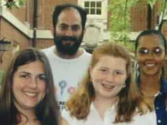
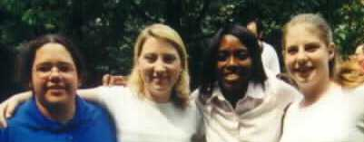
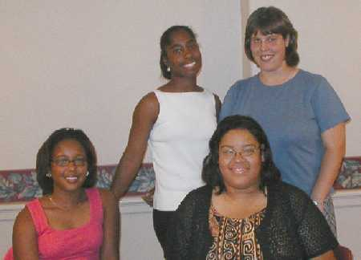
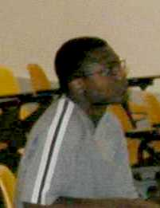
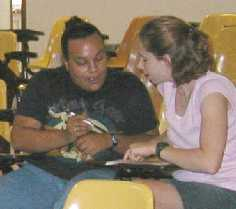

Research Seminars. The most important portion of the program is the research seminars, where professional mathematicians and statisticians contribute problems. At least one of the seminar leaders will be an African American; the other two will be Miami faculty from either the Department of Mathematics and Statistics or the Department of Systems Analysis. Before arriving in Oxford, the students are mailed a card listing each seminar area and prerequisites. They are asked to rank the topics and return the card. They are then assigned an area based on their choice. We hope to give each person his or her first choice, but this is not always possible. During the first four weeks of the program, each seminar director presents a series of lectures to the seminar participants in their area of expertise and assign research problems. These problems are challenging and at the same time easy enough for a very good undergraduate student to get partial results. Each student chooses a problem to work on and consults the appropriate professional. The seminar leaders are asked to meet with their students every day except Friday during the first four weeks and at least twice a week during the last three weeks. We strongly encourage students to work in groups. At the end of the program, the students give an oral presentation on their results and write a paper. The paper will be included in an online journal published by the Institute.
Selected Abstracts from Student
Papers
|
|
Variations on Seymour's Conjecture
Kelly Anderson, Catherin Nightingale and Monique Richardson investigated families of oriented graphs to see if they satisfy Seymour's Conjecture and to see if stronger claims can be made about the specific graph families. They verified the conjecture for several families of digraphs and in some cases proved a stronger claim that every vertex satisfies the conjecture. Finally they showed that if Seymour's Conjecture holds true for all strong oriented graphs, then it holds true for all oriented graphs. |
| Pinwheels: Orienting the Line Graph of the Complete Graph
Mary Ann Coleman, Laura Lynch and Lateefah Id-Deen defined a pinwheel to be a specific king of orientation of the line graph of a complete graph.. They found that every pinwheel is strongly connected, contains a specific number of Euler tours, and that Seymour's Conjecture is true for every vertex in any pinwheel. They also gave tight bounds on the number of 3-cycles possible, the number of spanning trees, and specific eigenvalues in any particular pinwheel, as well as characterized pinwheels of diameter 2. |
 |
|  | Multivariate Analysis of Vehicle Safety
Leigh Cobbs, Mary Cunningham and Cheryl Gerde (pictured also with Shenek Heyward) took commonly available statistics of a large number of popluar vehicles to create a vehicle safety rating system. They use principle component analysis to reduce their set of variables to a smaller set of principal components. Then they used discriminant analysis to classify vehicles by safety rating using these principal components. |
| A Multivariate Statistical Analysis of the Free World-- Shenek Hayward and David Friedenberg used multivariate statistical analysis techniques such as discriminant analysis and factor analysis to determine a rule for classifying countries from a sample into one of two groups, democratic or non democratic on the basis of 11 variables. They reduced the dimensionality from 11 variables to a smaller set of underlying factors that can be used to explain the variation within countries. |
| 
Jacquis, Leslie and Stacy with teaching assistant, Angela Grant |
From Guessing Games to Compact Discs: Some Applications of
Coding Theory
Leslie Calloway, Jacquis Casher and Stacy Hoehn looked at applications of packings and coverings. They investigated the q-ary hat color problem, which makes use of both perfect packings and coverings. In particular, they looked at possible losing sets and strategies for the cases where there are perfect numbers of players. They made modifications to the rules of the hat game to increase the winning probability and make most efficient use of the information gained from configurations in the losing set. Using the modified rules and the ternary linear Golay code, they derive a perfect strategy for a team of eleven players and three hat colors. They also looked at strong coverings as a method to play the q-ary hat game. |
|  | Hats Required: Perfect and Imperfect Strategies for the Hat Problem
Didier Deshommes, Andrea Falden and Megan Breit investigated the hat color problem for both perfect and imperfect team sizes by considering ways of constructing sets of losing configurations and corresponding strategies. They also obtain upper bounds for the number of equivalent sets of losing configurations for both perfect and imperfect team sizes. |
 |